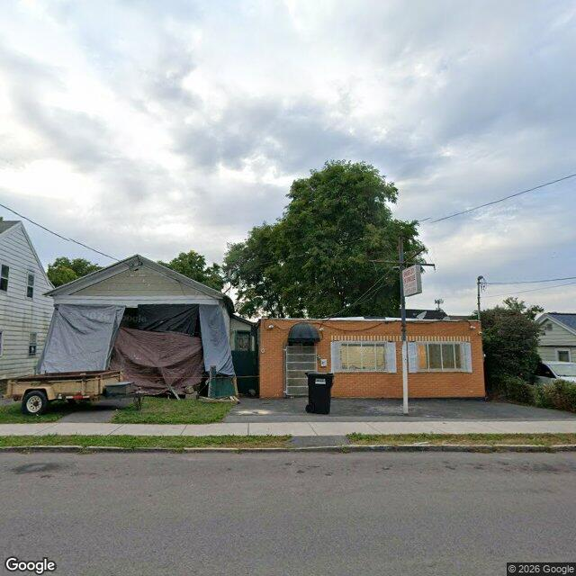

Property entry
417 Wolf St
Published 2026-11-19T03:30:51+00:00
Parcel key: 002-05-150

City records
Matches use parcel IDs or normalized property addresses. Nearby properties are not treated as matches. Records may include historical or closed cases; check each record's status and dates. Publication dates are not source-data dates.
Vacant properties 0
No matches stored for this feed. The feed or address matching may be incomplete; this is not confirmation that no records exist.
Records refreshed 2026-11-18.
Rental registry 1
- Latitude
- 43.0729719
- Longitude
- -76.16348449
- NeedsRR
- Yes
- ObjectId
- 7
- PropertyAddress
- 417 Wolf St
- RR_app_received
- 1750809600000
Records refreshed 2026-11-18.
Code violations 22
- Latitude
- 43.0729719
- Longitude
- -76.16348449
- Neighborhood
- Washington Square
- ObjectId
- 95881
- SBL
- 002.-05-15.0
- complaint_address
- 417 Wolf St
- Latitude
- 43.0729719
- Longitude
- -76.16348449
- Neighborhood
- Washington Square
- ObjectId
- 95883
- SBL
- 002.-05-15.0
- complaint_address
- 417 Wolf St
- Latitude
- 43.0729719
- Longitude
- -76.16348449
- Neighborhood
- Washington Square
- ObjectId
- 95886
- SBL
- 002.-05-15.0
- complaint_address
- 417 Wolf St
- Latitude
- 43.0729719
- Longitude
- -76.16348449
- Neighborhood
- Washington Square
- ObjectId
- 95888
- SBL
- 002.-05-15.0
- complaint_address
- 417 Wolf St
Records refreshed 2026-11-18.
Unfit properties 0
No matches stored for this feed. The feed or address matching may be incomplete; this is not confirmation that no records exist.
Records refreshed 2026-11-18.
AI image observations (unverified)
These observations are generated from an image, not an inspection or an official code finding. No human verification is recorded here.
Image capture date: Not recorded. The entry publication date does not establish the age of the image.
Automated image description
{ "summary": "The property features a single-story brick commercial-style building with an attached garage-like structure, exhibiting some visible exterior conditions such as covered windows and a tarp-obscured garage opening.", "property_type_guess": "commercial", "visible_conditions": [ "The main structure is a single-story building with a brick facade, which appears to be in fair condition with some visible wear or discoloration.", "Windows on the brick building's facade are obscured by what appear to be coverings or boarding.", "A dark-colored awning is present over the main entrance of the brick building.", "An attached garage-like structure has a gabled roof and its primary opening is covered by multiple tarps.", "A utility trailer containing various items is parked in front of the garage-like structure.", "A 'FOR SALE' sign is visibly posted on a pole near the front of the property.", "The small strip of grass between the sidewalk and the structures appears somewhat unkempt.", "A black trash bin is located near the entrance of the brick building." の部分を修正しました。 ], "condition_scores": { "roof": "unclear", "siding_or_facade": "fair", "windows_doors": "poor", "porch_or_entry": "fair", "yard_or_lot": "fair", "trash_debris": "minor", "vegetation_overgrowth": "none_visible" }, "visible_flags": { "boarded_windows_or_doors": "yes", "fire_damage_visible": "no", "structural_damage_visible": "no", "vacancy_signs_visible": "yes", "active_construction_visible": "no" }, "possible_unrecorded_issues": [ "A 'FOR SALE' sign is visibly posted on the property.", "Windows on the commercial structure appear to be covered or boarded.", "The garage opening is covered by multiple tarps, obscuring its interior.", "A utility trailer with various items is present, which could be considered clutter or unmanaged storage.", "The small strip of grass in the yard appears unkempt." ], "image_annotations": [ { "label": "Covered windows/facade", "reason": "Windows on the commercial structure appear to be covered or boarded, obscuring visibility.", "bbox": { "x": 0.45, "y": 0.45, "width": 0.4, "height": 0.25 }, "confidence": "high" }, { "label": "Tarp-covered garage opening", "reason": "The main opening of the garage-like structure is obscured by multiple tarps.", "bbox": { "x": 0.18, "y": 0.43, "width": 0.28, "height": 0.35 }, "confidence": "high" }, { "label": "Trailer with items", "reason": "A utility trailer containing various items is parked in front of the garage, contributing to clutter.", "bbox": { "x": 0.05, "y": 0.65, "width": 0.3, "height": 0.2 }, "confidence": "high" }, { "label": "Unkempt yard strip", "reason": "The small strip of grass between the sidewalk and the structures appears unkempt.", "bbox": { "x": 0.0, "y": 0.75, "width": 0.9, "height": 0.09 }, "confidence": "medium" }, { "label": "For Sale sign", "reason": "A real estate 'FOR SALE' sign is visibly posted on the property.", "bbox": { "x": 0.6, "y": 0.25, "width": 0.1, "height": 0.15 }, "confidence": "high" } ], "needs_human_review": "true", "confidence": "medium", "caveats": [ "Portions of the property, including windows and a garage opening, are obscured by coverings or tarps, limiting full assessment.", "The nature of items on the trailer and under tarps is unclear; they could be storage rather than debris." ] }
Property type guess: unclear
Visible conditions
- No items reported.
Condition scores
No structured condition scores available.
Visible flags
No structured visible flags available.
Possible image-only flags
- No items reported.
AI review boxes
- No items reported.
Review reasons
- No items reported.
Image quality
- Available
- True
- Bytes
- 65321
- Needs Rerun
- False
ACS tract context
Census Tract 2; Onondaga County; New York
- Housing units
- 1686
- Median gross rent
- 146700
- Median household income
- 51848
- Poverty rate
- 28.1
- Renter-occupied share
- 50.1
- Total population
- 3511
- Vacancy rate
- 14.7
OpenStreetMap nearby
60 meter search radius
Nearby map data is temporarily unavailable. This does not mean there are no mapped features.